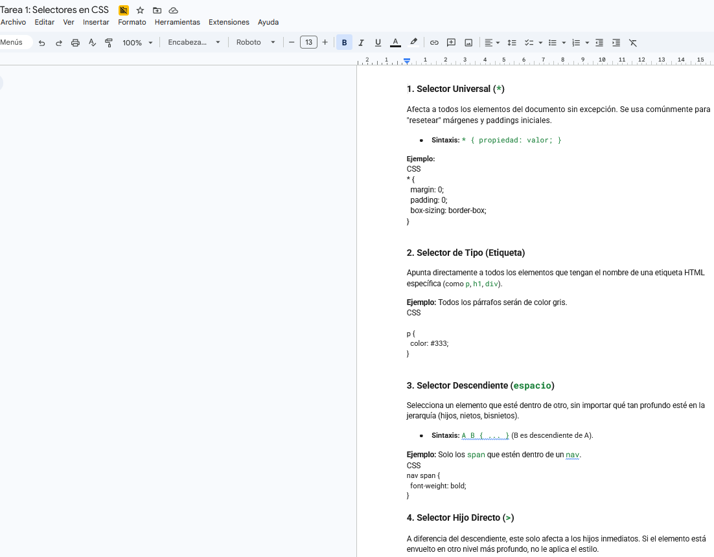

Participación 1
En esta tarea, el objetivo fue identificar los componentes esenciales que forman la anatomía de un sitio profesional. Investigué las diez partes clave, desde el Encabezado y el Logo hasta elementos de conversión como los CTA (Call to Action) y Formularios. Aprendí que una web no es solo información, sino una estructura organizada donde el Pie de Página y el Menú deben ser intuitivos para el usuario. Para reforzar esto, elaboré una maqueta visual (wireframe) donde ubiqué cada elemento, lo que me ayudó a entender la jerarquía visual y cómo se distribuyen los espacios para que una página sea funcional.
Ver PDF
Tarea 1: Selectores CSS
Esta actividad se centró en la parte técnica del desarrollo front-end. Elaboré un documento detallando los diferentes Selectores CSS (Universal, de Tipo, de Clase, ID, entre otros). Lo más valioso fue aprender la especificidad; por ejemplo, cómo un Selector Hijo o Adyacente permite aplicar estilos muy precisos sin afectar a todo el documento. Además, puse esto en práctica creando una estructura HTML con segmentos específicos como el Main dividido en tres partes y un Encabezado segmentado. Entendí que CSS es la herramienta que transforma un código plano en una interfaz visual atractiva.
Ver PDF